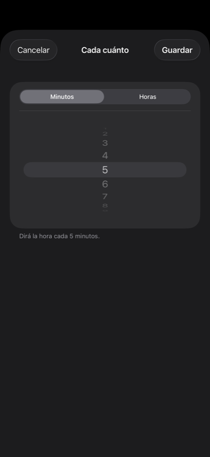

Shows the time huge, and says it out loud every few minutes. iPhone. No accounts, no server, no internet.
It doesn't do much more. A full-screen clock, digits as big as they'll fit, that also speaks: every minute, every five, every half hour, or whatever you set. That's it.
Turns out that's exactly what you need when your hands are wet.
It came from one specific problem: knowing the time while you're in the shower. You can't touch the phone, you can't dry your hands to unlock it, and with the steam you can't see much anyway. I looked for an app that just did that, couldn't find one, so I built it.
A notification has to be looked at. In the shower, cooking, or with your hands covered in flour, looking is the one thing you can't do.
Three decisions follow from that:

Nothing to sign up for. No server. The app doesn't connect anywhere, because it has no reason to: a clock that says the time has nothing to send to anybody.
No ads and no analytics either. We don't know when you use it, or how much, or from where — and we don't want to.
The privacy policy is short, precisely for that reason.
Not on the App Store yet. It's finished and tested; what's left is the paperwork of publishing it. When it's there, the button will show up here.
For iPhone. No subscription.
Found a bug, got a question or an idea? rutinaapps@gmail.com